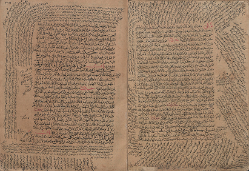
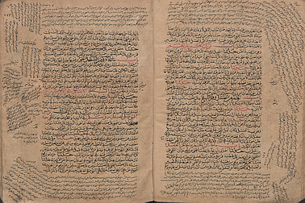

|
Berat Kurar Barakat I'm a PhD research student of computer science in Visual Media Lab (VML) at Ben-Gurion University of the Negev. My latest research is on historical document image analysis using digital image processing and machine learning methods. Home Teaching Google Scholar GitHub Office: 37/-102 |
|  | Challenging text line dataset contains 30 pages from two different manuscripts. It is written in Arabic language and contains 2732 text lines where a considerable amount of them are multidirected, multi-skewed or curved. Ground truth where text lines were labeled manually by line masks, is also available in the dataset. |
|  | Complex layout dataset contains 32 document images from 2 manuscripts which were scanned at a private library located at the old city of Jerusalem and other samples which were collected from the Islamic manuscripts digitization project at Leipzig university library. |
Berat Kurar Barakat, Ahmad Droby, Majeed Kassis, and Jihad El-Sana
2018 16th International Conference on Frontiers in Handwriting Recognition (ICFHR)
[paper] [poster] [code]
Berat Kurar Barakat, Ahmad Droby, Majeed Kassis, and Jihad El-Sana
2018 13th IAPR International Workshop on Document Analysis Systems (DAS)
[paper] [poster] [pitch] [code]
Berat Kurar Barakat and Jihad El-Sana
2018 2nd International Workshop on Arabic Script Analysis and Recognition (ASAR)
[paper] [slides] [code]
Alaa Abdalhaleem, Berat Kurar Barakat, and Jihad El-Sana
2018 2nd International Workshop on Arabic Script Analysis and Recognition (ASAR)
[paper] [slides]
Reem Alaasam, Berat Kurar Barakat, and Jihad El-Sana
2018 2nd International Workshop on Arabic Script Analysis and Recognition (ASAR)
[paper]
Reem Alaasam, Berat Kurar Barakat, and Jihad El-Sana
2017 1st International Workshop on Arabic Script Analysis and Recognition (ASAR)
[paper]
Winner Team of Page Segmentation Track
Berat Kurar Barakat, Ahmad Droby, and Jihad El-Sana
[paper] [results] [code]
Winner Team of Classification Track
Ahmad Droby, Berat Kurar Barakat, and Jihad El-Sana
[paper] [results] [code]
Majeed Kassis, Berat Kurar Barakat, Rafi Cohen, Jihad El-Sana, and Klara Kedem
[paper] [code]